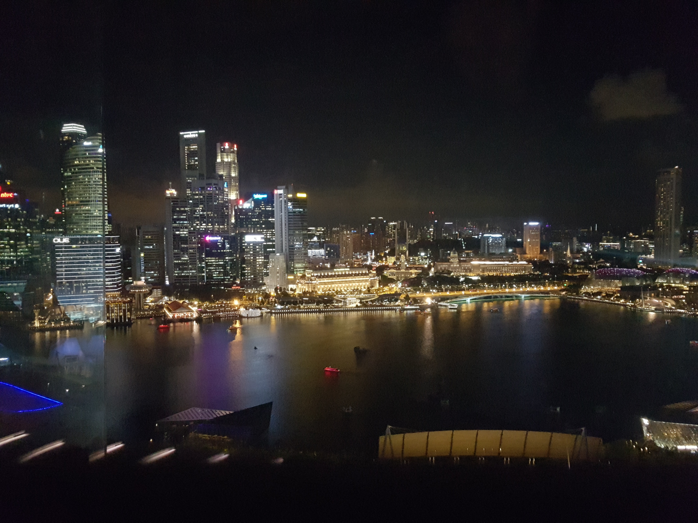
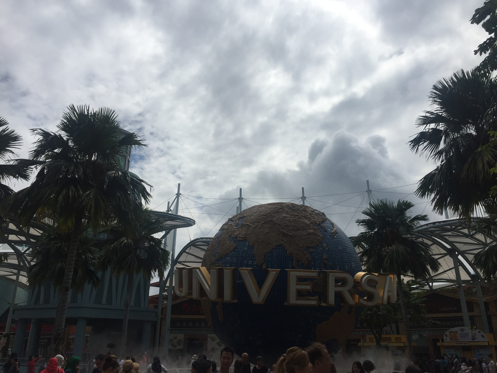
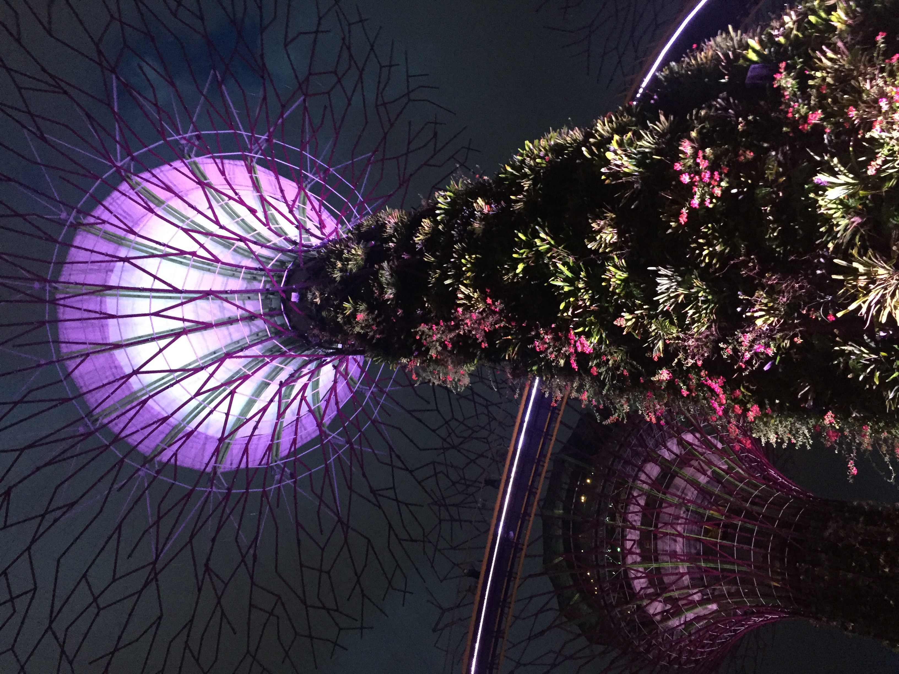

프라하
소개
관광지
번외추천!
빈(비엔나)
소개
관광지
번외추천!
싱가폴
소개
관광지
번외추천!
싱가폴 소개

동남아시아의 경제 강국
싱가포르 섬과 60여 개의 작은 섬들로 이루어져 있음
월 평균기온은 높은 편으로 연중 고르게 분포
관광지 1

센토사 섬 / 유니버셜 스튜디오
하나가 통째로 테마파크처럼 꾸며져 있는 싱가포르 최고의 관광지
유니버설 스튜디오는 가장 인기 있는 테마파크 실로소 비치를 비롯한 해변 지역을 중심으로 여러 개의 놀이 시설이 있다.
트램 1, 2, D번 Rathausplatz에서 하차, 또는 U2호선 Rathaus역에서 하차 후 도보 3분
관광지 2

가든스 바이 더 베이
싱가포르에서 가장 큰 공원
오스트리아 최고의 고딕식 성당
MRT 베이 프론트 역 B 출구에서 연결, 도보 5~10분(마리나 베이 샌즈 호텔과도 연결)
번외추천!
마리나 배이 샌즈
싱가포르 최대의 핫 플레이스
마리나 베이 샌즈 호텔 주변에는 쇼핑몰, 예술 과학 박물관, 카지노, 컨벤션 센터 등이 들어서 있는데 하나하나가 거대한 덩어리로 결합된 콤플렉스
가장 가깝게 연결되는 역은 MRT 베이프런트 역이다.